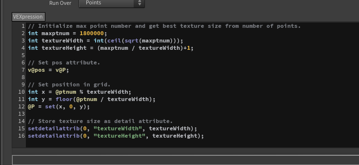
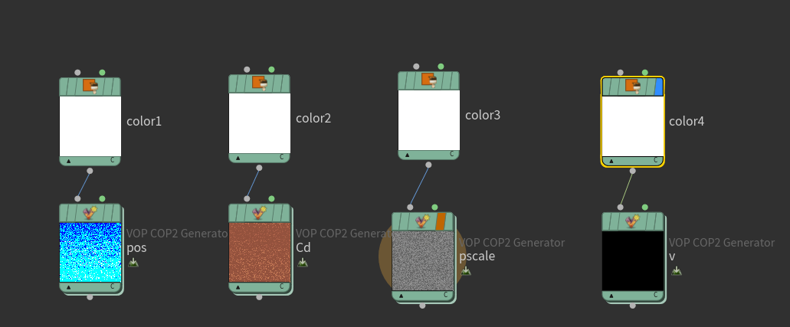
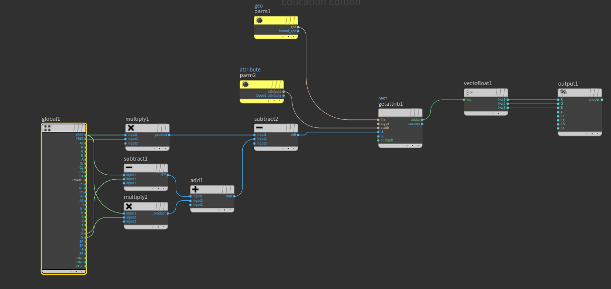

← 部落格 × Special Project | PART2


第 3 週
第 3 週計畫：
-
把大量粒子從 Houdini 匯入 Unreal
Houdini Niagara 測試
我也試著透過 Houdini Niagara 把 Gaussian Splat 粒子匯入 Unreal。馬克杯的粒子數不多，所以能匯入 Unreal 並重建得很好。第一支影片是在 Unreal 中算出的馬克杯。後來我發現用 Houdini Niagara 外掛匯入大量粒子非常耗時。
所以我照著一個教學，用一個能像 VAT 一樣烘焙動畫的自訂工具匯入大量粒子。教學連結：https://www.youtube.com/watch?v=Yf4IBYPALdo
基本上是 Itim 把她的 Houdini 檔傳給我，由我來測試。照著教學，我先從寫 VEX 開始。
這是在 Houdini Point Wrangle（Run Over 設為 Points）中執行的 VEX 程式。目的是把點雲重新排列成規則的 2D 網格，讓點的資料能烘焙進貼圖。這是 GPU 粒子、VAT（頂點動畫貼圖）或點快取的標準技術，之後可在遊戲引擎或 shader 中讀回。

接著在 COPs 中產生位置、顏色、pscale 和速度貼圖。

下面展示如何把位置資料寫進貼圖。
這一步把每個點的 3D 位置編碼成一個像素的顏色。處理完所有像素後，就得到一張「位置貼圖」：每個像素的 RGB 存放對應點的 XYZ 座標。遊戲引擎或 shader 可以取樣這張圖，在 GPU 上瞬間重建整個點雲的位置。其他屬性也能用同樣方式擷取。
Cd（顏色）
Pscale（大小）

Velocity（速度）
這是最終結果的樣子。因為粒子數量一直在變，每個粒子的 ID 也跟著變，所以把動畫烘焙成貼圖後會閃爍。我也和 Danci 討論過能否在 Unreal 中迭代，Danci 說很困難，所以我們放棄了這個流程。